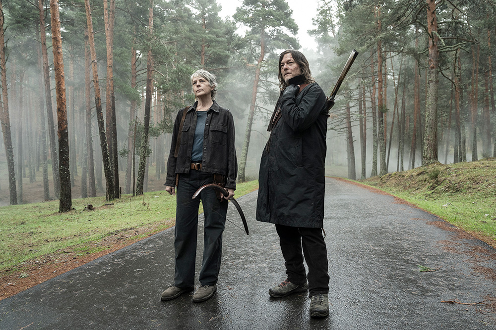

Ballesta
La ballesta de Daryl Dixon es un arma icónica. Esta arma es conocida por su eficacia y sigilo, lo que la convierte en una herramienta esencial para la supervivencia. Además, su habilidad para usar la ballesta con precisión y rapidez lo convierte en un combatiente formidable.

Motocicleta
La motocicleta de Daryl Dixon es una extensión de su personalidad rebelde. Es una herramienta de movilidad y escape, que le permite desplazarse rápidamente por el mundo post-apocalíptico.

Hermano de batalla
Daryl Dixon es conocido por su fuerte vínculo con Rick Grimes, a quien considera su hermano de batalla. A lo largo de la serie, su relación evoluciona de una amistad tensa a una conexión profunda y leal, demostrando que Daryl es un personaje complejo y emocionalmente rico.

Carol
La relación entre Daryl Dixon y Carol Peletier es una de las más significativas de la serie. A lo largo de la historia, su vínculo se fortalece a través de experiencias compartidas y desafíos, mostrando una conexión profunda y emocional que va más allá de la amistad.
